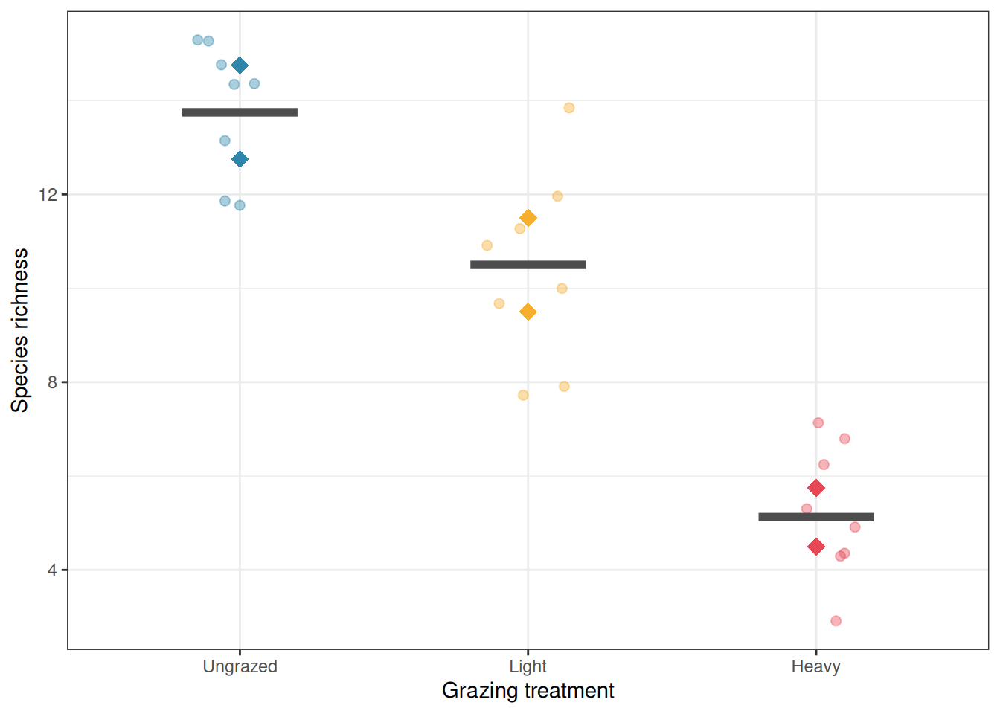
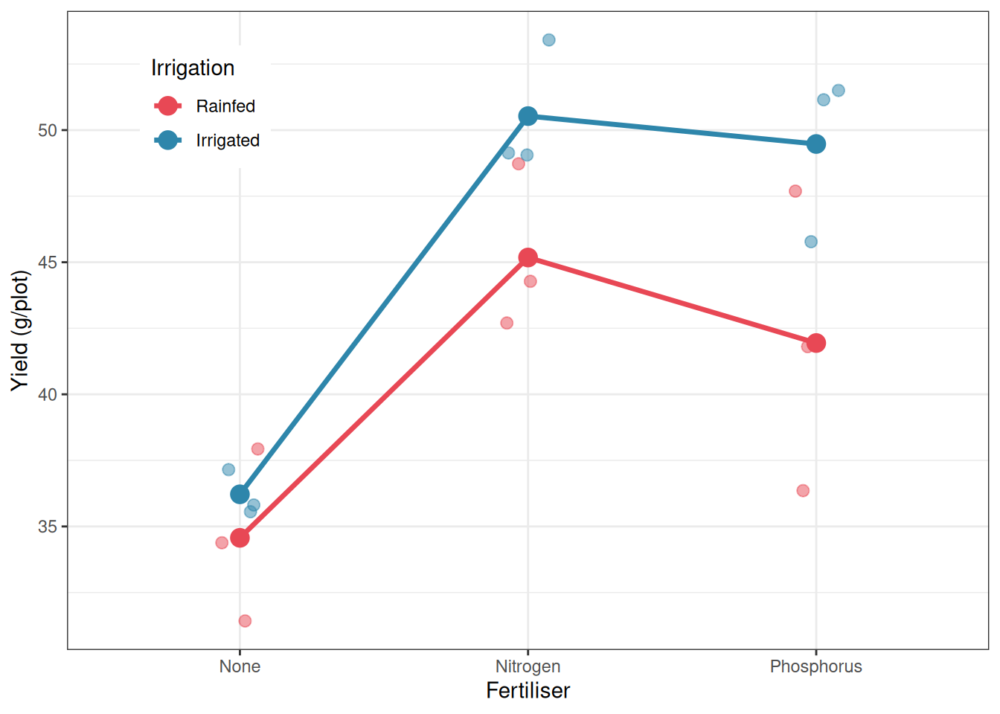

Every ANOVA design considered so far has shared a common simplifying assumption: that the experimental units receiving different treatments are all of the same type, at the same level of organisation, and subject to the same sources of variation. A plant is a plant, a patient is a patient, a plot is a plot.
Biological reality is rarely so flat. Ecosystems are organised in layers: individual organisms live within plots, plots within fields, fields within regions. Clinical trials recruit patients from hospitals, hospitals from healthcare systems. Agricultural experiments apply whole-farm treatments to fields and within-field treatments to plots. In all of these cases, the experimental units exist at multiple levels of a hierarchy, and treatments are applied, and therefore replicated, at different levels of that hierarchy.
Ignoring this hierarchical structure leads directly to the pseudoreplication problem introduced in Chapter 2. Accounting for it correctly requires designs and analyses that explicitly represent the nested structure of the data. This chapter introduces the two most important such designs in biological research: the split-plot and the nested ANOVA.
7.1 Hierarchy in Biological Data: Why It Cannot Be Ignored
7.1.1 Everything Is Nested in Something
Before introducing any new design, it is worth pausing to build a clear intuition for what hierarchical structure means and why it demands special treatment.
Consider a simple example. A researcher wants to study the effect of two soil treatments (amended vs unamended) and two plant varieties (A vs B) on crop yield. She has access to four large fields. Two fields receive the soil amendment; two do not. Within each field, she establishes four plots: two planted with Variety A and two with Variety B. She measures yield from five plants within each plot.
This is a hierarchy. Fields are nested within soil treatment. Plots are nested within fields. Plants are nested within plots. Each level has its own sources of variation: fields differ from each other in ways that have nothing to do with soil treatment (drainage, history, microclimate); plots within a field differ from each other in ways that have nothing to do with variety (position, local soil variation); plants within a plot differ from each other due to individual biological variation.
The critical point is that the treatment is applied and replicated at the field level, not the plot level and not the plant level. The soil amendment was not randomly assigned to individual plants: it was assigned to whole fields. The field is therefore the unit of replication for the soil treatment comparison, and there are only two replicates per treatment (\(n = 2\) fields per treatment), not \(2 \times 4 \times 5 = 40\).
7.1.2 What Goes Wrong When You Ignore the Hierarchy
If the researcher analyses this experiment by running a standard ANOVA on all \(4 \times 4 \times 5 = 80\) plant measurements, treating each plant as an independent observation, she is pseudoreplicating at two levels simultaneously. The within-field and within-plot correlation structures are ignored, and the error term used to test the soil treatment effect is the plant-level residual, which is far too small, because it does not account for the field-to-field variation that is the appropriate noise against which the treatment should be judged.
The simulation below demonstrates the inflation of the false positive rate that results:
Code
library(future)library(furrr)library(purrr)plan(multisession)set.seed(42)n_sim<-5000alpha<-0.05n_fields<-4# 2 per treatmentn_plots<-4# per fieldn_plants<-5# per plotfield_sd<-3# field-to-field variationplot_sd<-2# plot-to-plot variation within fieldplant_sd<-1# plant-to-plant variation within plotresults<-future_map_dfr(seq_len(n_sim), function(i){treatment<-rep(c("Control", "Amended"), each =n_fields/2)field_effect<-rnorm(n_fields, 0, field_sd)df<-do.call(rbind, lapply(seq_len(n_fields), function(f){do.call(rbind, lapply(seq_len(n_plots), function(p){plot_effect<-rnorm(1, 0, plot_sd)data.frame( yield =rnorm(n_plants, mean =50+field_effect[f]+plot_effect, sd =plant_sd), treatment =treatment[f], field =factor(f), plot =factor(paste(f, p, sep ="_")))}))}))# Wrong: treat all plants as independentp_wrong<-summary(aov(yield~treatment, data =df))[[1]][["Pr(>F)"]][1]# Correct: use field means as the unit of analysisfield_means<-aggregate(yield~treatment+field, data =df, FUN =mean)p_correct<-summary(aov(yield~treatment, data =field_means))[[1]][["Pr(>F)"]][1]data.frame(p_wrong =p_wrong, p_correct =p_correct)}, .options =furrr_options(seed =TRUE))plan(sequential)
The false positive rate from the naive analysis is far above 5% (0.681), while the correct analysis, using field means as the unit of analysis for the field-level treatment, stays at the nominal level. This is the pseudoreplication problem from Chapter 2, now seen in a hierarchical context.
7.1.3 Visualising the Hierarchy
It helps to draw the structure of a hierarchical experiment explicitly before deciding how to analyse it. For the field-plot-plant example:
flowchart TD
subgraph L1["Level 1: Experiment"]
A[Experiment]
end
subgraph L2["Level 2: Field\ntreatment unit"]
B[Control\nField 1 and 2]
C[Amended\nField 3 and 4]
end
subgraph L3["\n\n\nLevel 3: Plot\nvariety unit"]
D[Plot 1\nVariety A]
E[Plot 2\nVariety B]
F[Plot 3\nVariety A]
G[Plot 4\nVariety B]
end
subgraph L4["\n\n\n\nLevel 4: Plant - observation"]
H[Plants\nn obs]
I[Plants\nn obs]
J[Plants\nn obs]
K[Plants\nn obs]
end
A --> B
A --> C
B --> D
B --> E
C --> F
C --> G
D --> H
E --> I
F --> J
G --> K
style A fill:#555555,color:#ffffff
style B fill:#2E86AB,color:#ffffff
style C fill:#E84855,color:#ffffff
style D fill:#2E86AB,color:#ffffff
style E fill:#2E86AB,color:#ffffff
style F fill:#E84855,color:#ffffff
style G fill:#E84855,color:#ffffff
style H fill:#aaaaaa,color:#ffffff
style I fill:#aaaaaa,color:#ffffff
style J fill:#aaaaaa,color:#ffffff
style K fill:#aaaaaa,color:#ffffff
style L1 fill:#f8f8f8,stroke:#cccccc,color:#555555
style L2 fill:#f8f8f8,stroke:#cccccc,color:#555555
style L3 fill:#f8f8f8,stroke:#cccccc,color:#555555
style L4 fill:#f8f8f8,stroke:#cccccc,color:#555555
Figure 7.1: Hierarchical structure of the field experiment. Soil treatment is applied at the field level and replicated across fields. Variety is applied at the plot level within each field. Plants are the observational unit at the bottom of the hierarchy.
7.1.4 The Golden Rule of Hierarchical Analysis
The rule that prevents most hierarchical analysis errors can be stated simply:
The error term used to test a treatment effect must come from the same level of the hierarchy at which that treatment was applied and randomised.
If soil amendment was randomised across fields, the field-to-field variation is the correct error term for testing the amendment effect. If variety was randomised across plots within fields, the plot-to-plot variation within fields is the correct error term for testing the variety effect. Using plant-level variation to test a field-level treatment is like using a ruler calibrated in millimetres to measure a distance that varies in kilometres, the instrument is simply measuring the wrong thing.
This rule is the conceptual foundation of both split-plot and nested ANOVA designs, which formalise it into a statistical framework.
7.2 Pseudoreplication: The Silent Epidemic in Biology
7.2.1 A Pervasive Problem
In their landmark 1984 paper, Hurlbert (1984) documented that pseudoreplication, the treatment of non-independent observations as independent replicates, was present in a substantial fraction of published ecological field experiments. Subsequent reviews have found similar rates across ecology, agriculture, and biomedical research. The problem has not gone away.
Pseudoreplication takes several distinct forms in practice, and being able to recognise each is an essential skill.
Simple pseudoreplication occurs when multiple measurements are taken from a single experimental unit and treated as independent replicates. Six measurements of soil nitrogen from the same plot do not give you six independent replicates, they give you six estimates of the nitrogen level in one plot. The plot is still \(n = 1\).
Sacrificial pseudoreplication occurs when the analysis is conducted at the wrong level of the hierarchy, as in the field example above. The name reflects the fact that the correct, but lower-powered, analysis is sacrificed in favour of an inflated, incorrect one.
Temporal pseudoreplication occurs when the same unit is measured repeatedly over time and the measurements are treated as independent. This is the repeated measures problem from Chapter 6 seen in a field ecology context: a plot measured in spring, summer, and autumn provides three measurements of the same plot, not three independent plots.
7.2.2 How to Avoid It
The antidote to pseudoreplication is to identify the experimental unit, the smallest unit that was independently assigned to a treatment, before the analysis begins, and to ensure that the unit of analysis matches the unit of replication. When subsampling within units is necessary (for precision, or because the response must be measured at a finer scale than the treatment was applied), the subsamples should be averaged to the level of the experimental unit before analysis, or the hierarchical structure should be modelled explicitly.
7.3 Split-Plot Design: Structure and Correct Error Terms
7.3.1 When Does a Split-Plot Design Arise?
A split-plot design arises naturally when two factors must be tested but one is much more difficult or expensive to change than the other. The classic agricultural example: irrigation regime (irrigated vs rainfed) must be applied to whole large fields because irrigation infrastructure cannot be changed plot by plot, while fertiliser type can be applied to much smaller individual plots within each field.
The experiment therefore applies the hard-to-change factor (whole-plot factor) to large units (whole plots), then subdivides each whole plot into smaller units (sub-plots) and applies the easy-to-change factor (sub-plot factor) to those.
This structure is not merely a practical compromise, it is a deliberate design choice that must be reflected in the analysis. The two factors are tested against different error terms, because they were randomised at different levels of the hierarchy.
7.3.2 Structure of the Split-Plot Design
With \(a\) levels of the whole-plot factor \(A\), \(b\) levels of the sub-plot factor \(B\), and \(r\) whole-plot replicates per level of \(A\):
There are \(a \times r\) whole plots in total.
Each whole plot is divided into \(b\) sub-plots.
Total observations: \(a \times r \times b\).
The two error terms are:
Whole-plot error (\(MS_{WP}\)): the variation among whole plots within the same level of \(A\). This is the correct error term for testing the main effect of \(A\).
Sub-plot error (\(MS_{SP}\)): the variation among sub-plots within the same whole plot. This is the correct error term for testing the main effect of \(B\) and the \(A \times B\) interaction.
The sub-plot error is typically smaller than the whole-plot error, which is why the sub-plot factor and the interaction are tested with more power than the whole-plot factor, a direct consequence of the design structure.
where \(\alpha_i\) is the whole-plot treatment effect, \(\delta_{ij}\) is the whole-plot error (variation among whole plots within treatment \(i\), the error term for \(A\)), \(\beta_k\) is the sub-plot treatment effect, \((\alpha\beta)_{ik}\) is the interaction, and \(\varepsilon_{ijk}\) is the sub-plot error (the error term for \(B\) and \(A \times B\)).
In R, the two error terms are specified explicitly using the Error() term in aov():
# whole.plot: the unit receiving the whole-plot treatment# A: whole-plot factor# B: sub-plot factorfit_sp<-aov(y~A*B+Error(whole.plot/B), data =df)summary(fit_sp)
7.4 Nested ANOVA: Subsampling vs True Replication
7.4.1 The Nested Structure
A nested design arises when the levels of one factor exist entirely within the levels of another, and the levels of the inner factor are not the same across levels of the outer factor. Fields contain plots, but the plots in Field 1 are different from the plots in Field 2 as they are nested within their respective fields, not crossed with them.
This is distinct from a factorial design, where every level of every factor is combined with every level of every other factor. In a factorial design, Variety A appears in both the irrigated and rainfed fields. In a nested design, the plots in Field 1 are unique to Field 1.
where \(\alpha_i\) is the effect of the outer factor \(A\) at level \(i\), \(\beta_{j(i)}\) is the effect of the inner factor \(B\) at level \(j\) nested within level \(i\) of \(A\) (denoted \(j(i)\)), and \(\varepsilon_{ijk}\) is the residual.
In R:
# B is nested within Afit_nested<-aov(y~A+B%in%A, data =df)# Equivalently:fit_nested<-aov(y~A/B, data =df)summary(fit_nested)
7.4.2 Subsampling vs True Replication
The most important practical distinction in nested designs is between true replication and subsampling. True replicates are independent experimental units that each received a treatment independently. Subsamples are multiple measurements taken from the same experimental unit.
True replicates
Subsamples
Definition
Independently treated units
Multiple measures of one unit
Example
Four separately irrigated fields
Five soil cores from one field
Contribution to \(n\)
Each counts as one replicate
Together count as one replicate
Error term
Between-unit residual
Within-unit residual
Treating subsamples as true replicates is the most common form of sacrificial pseudoreplication. The nested ANOVA correctly partitions the variation into between-unit and within-unit components and uses the appropriate error term for each.
7.5 Example 1: Grazing Effects on Plant Diversity
7.5.1 The Study
An ecologist is investigating the effect of grazing intensity (ungrazed, light grazing, heavy grazing) on plant species richness in a grassland (Section B.1.5). Six large paddocks are available, two assigned to each grazing treatment. Within each paddock, four quadrats are established and plant species richness is counted in each. Three random soil cores are taken from each quadrat for soil nutrient analysis, but species richness is the response of interest.
Grazing treatment is the fixed factor of interest. Paddock is nested within grazing treatment and is the unit of replication for the treatment comparison. Quadrat is nested within paddock and provides subsamples within the true replicates.
richness treatment paddock
Min. : 3.000 Ungrazed:8 U1:4
1st Qu.: 6.750 Light :8 U2:4
Median :10.500 Heavy :8 L1:4
Mean : 9.792 L2:4
3rd Qu.:13.250 H1:4
Max. :15.000 H2:4
7.5.2 Correct Analysis: Paddock as the Error Term
# Nested ANOVA: paddock nested within treatmentfit_eco<-aov(richness~treatment+Error(paddock/treatment), data =grazing)summary(fit_eco)
Error: paddock
Df Sum Sq Mean Sq F value Pr(>F)
treatment 2 303.58 151.79 23.81 0.0144 *
Residuals 3 19.13 6.38
---
Signif. codes: 0 '***' 0.001 '**' 0.01 '*' 0.05 '.' 0.1 ' ' 1
Error: Within
Df Sum Sq Mean Sq F value Pr(>F)
Residuals 18 35.25 1.958
The output is split into two strata, each telling a different part of the story.
The Error: paddock stratum is where the treatment test lives. Grazing treatment has a significant effect on plant species richness (\(F_{2,3} = 23.81\), \(p = 0.014\)). The residual mean square in this stratum (6.38) estimates the paddock-to-paddock variation within treatments i.e. the genuine noise against which the treatment effect is judged, since paddocks are the units that were independently assigned to grazing treatments. This is the correct error term.
The Error: Within stratum captures the quadrat-to-quadrat variation within paddocks, with a residual mean square of 1.96. Notice that this is substantially smaller than the paddock-level residual (6.38) meaning paddocks differ from each other more than quadrats within the same paddock differ from each other. This is the typical pattern in nested designs, and it is precisely why using quadrat-level variation to test the treatment effect would be wrong: the within-paddock noise floor is too low, and testing against it would make the treatment appear far more significant than the actual replication warrants.
With only two paddocks per treatment, the degrees of freedom for the treatment test are low (\(df_{\text{treatment}} = 2\), \(df_{\text{error}} = 3\)). This correctly reflects the limited replication at the treatment level. No matter how many quadrats are sampled within each paddock, the experiment has only six independent units at the treatment level, and the analysis honestly acknowledges this. The significant result (\(p = 0.014\)) is therefore a genuine finding achieved with sparse replication, not an artefact of inflated degrees of freedom.
# Visualiselibrary(ggplot2)paddock_means<-aggregate(richness~treatment+paddock, data =grazing, FUN =mean)ggplot(grazing, aes(x =treatment, y =richness, colour =treatment))+geom_jitter(width =0.15, alpha =0.4, size =2)+geom_point(data =paddock_means, aes(y =richness, group =paddock), size =4, shape =18)+stat_summary(fun =mean, geom ="crossbar", width =0.4, colour ="grey30", linewidth =0.8)+scale_colour_manual(values =c("#2E86AB", "#F6AE2D", "#E84855"))+labs(x ="Grazing treatment", y ="Species richness", colour =NULL)+theme_bw()+theme(legend.position ="none")

The analysis uses paddock as the correct error term for testing the grazing treatment effect. With only two paddocks per treatment, the degrees of freedom for the treatment test are low (\(df = 2\) for the treatment, \(df = 3\) for the whole-plot error), correctly reflecting the fact that the experiment has limited replication at the treatment level, regardless of how many quadrats were sampled within each paddock.
7.5.3 What Happens if You Ignore the Nesting
# Wrong: treat all quadrats as independentfit_eco_wrong<-aov(richness~treatment, data =grazing)summary(fit_eco_wrong)
Df Sum Sq Mean Sq F value Pr(>F)
treatment 2 303.58 151.79 58.62 2.55e-09 ***
Residuals 21 54.38 2.59
---
Signif. codes: 0 '***' 0.001 '**' 0.01 '*' 0.05 '.' 0.1 ' ' 1
cat("\nCorrect df for treatment: 2, error df: 3\nWrong df for treatment: 2, error df:",df.residual(fit_eco_wrong), "\n")
Correct df for treatment: 2, error df: 3
Wrong df for treatment: 2, error df: 21
The naive analysis has \(df_{\text{error}} = 21\) instead of 3, artificially inflating the power of the test by treating quadrat-level variation as if it were independent replication of the treatment.
7.6 Example 2: Irrigation and Fertiliser in a Split-Plot Design
7.6.1 The Study
An agronomist is testing two irrigation regimes (rainfed vs irrigated) and three fertiliser types (none, nitrogen, phosphorus) on wheat yield (Section B.1.6). Irrigation is applied to whole fields (it cannot be changed within a field) while fertiliser can be applied to individual plots within each field. Six fields are available, three assigned to each irrigation treatment. Each field is divided into three plots, one for each fertiliser type.
This is a split-plot design:
Whole-plot factor: irrigation (2 levels), replicated across 6 fields (3 per treatment).
Sub-plot factor: fertiliser (3 levels), applied to plots within each field.
yield irrigation fertiliser field
Min. :31.40 Rainfed :9 None :6 R1:3
1st Qu.:36.62 Irrigated:9 Nitrogen :6 R2:3
Median :43.43 Phosphorus:6 R3:3
Mean :42.98 I1:3
3rd Qu.:48.91 I2:3
Max. :53.43 I3:3
7.6.2 Fitting the Split-Plot Model
# Correct split-plot analysis# field is the whole-plot unit; fertiliser is the sub-plot factorfit_sp<-aov(yield~irrigation*fertiliser+Error(field/fertiliser), data =irrig)summary(fit_sp)
Error: field
Df Sum Sq Mean Sq F value Pr(>F)
irrigation 1 105.6 105.58 3.647 0.129
Residuals 4 115.8 28.95
Error: field:fertiliser
Df Sum Sq Mean Sq F value Pr(>F)
fertiliser 2 532.6 266.29 89.801 3.31e-06 ***
irrigation:fertiliser 2 26.6 13.28 4.479 0.0495 *
Residuals 8 23.7 2.97
---
Signif. codes: 0 '***' 0.001 '**' 0.01 '*' 0.05 '.' 0.1 ' ' 1
The output separates into two error strata, each testing a different set of effects against the appropriate level of variation.
The Error: field stratum tests the whole-plot factor, irrigation, against the field-to-field variation within irrigation treatments (\(MS_{\text{field}} = 28.95\)). The effect of irrigation is not significant (\(F_{1,4} = 3.65\), \(p = 0.129\)). This result should be interpreted carefully: the non-significance does not mean irrigation has no effect on yield (the interaction below suggests it does) but rather that the main effect of irrigation, averaged across all three fertiliser types, cannot be distinguished from field-to-field background variation with only three fields per irrigation treatment. This is the honest cost of having limited whole-plot replication. The wide confidence interval around the irrigation effect, not the \(p\)-value alone, reflects the true uncertainty here.
The Error: field:fertiliser stratum tests the sub-plot factor and the interaction, both against the plot-to-plot variation within fields (\(MS_{\text{subplot}} = 2.97\)). This residual is nearly ten times smaller than the whole-plot residual (28.95), which is the typical pattern in split-plot designs and explains why sub-plot effects are tested with considerably more power than whole-plot effects.
The main effect of fertiliser is highly significant (\(F_{2,8} = 89.80\), \(p < 0.001\)), confirming that fertiliser type has a strong effect on yield regardless of irrigation regime. More interestingly, the irrigation-by-fertiliser interaction is significant (\(F_{2,8} = 4.48\), \(p = 0.049\)), indicating that the yield advantage of different fertiliser types is not the same under rainfed and irrigated conditions. Nitrogen fertiliser, in particular, produces a larger absolute yield gain under irrigation than under rainfed conditions which is a biologically sensible result, since nitrogen uptake is enhanced by water availability.
This pattern of results is instructive for two reasons. First, it illustrates why the split-plot design is worth the added analytical complexity: had this been run as a simple two-way factorial with independent plots for all combinations, the irrigation effect and the interaction would have been tested against the same error term, concealing the different precision available for whole-plot and sub-plot comparisons. Second, it demonstrates a common outcome in agricultural split-plot experiments: the whole-plot factor (here irrigation, which is expensive to manipulate and therefore sparsely replicated) is underpowered relative to the sub-plot factor (fertiliser, which is cheap to vary and therefore well replicated). Recognising this asymmetry at the design stage, and planning accordingly, is one of the practical skills that distinguishes experienced from novice experimenters.
7.6.3 Visualising the Results
library(ggplot2)summ_agr<-aggregate(yield~irrigation+fertiliser, data =irrig, FUN =mean)ggplot(irrig, aes(x =fertiliser, y =yield, colour =irrigation, group =irrigation))+geom_jitter(width =0.08, alpha =0.5, size =2.5, aes(colour =irrigation))+geom_line(data =summ_agr, aes(y =yield), linewidth =1.2)+geom_point(data =summ_agr, aes(y =yield), size =4)+scale_colour_manual(values =c("#E84855", "#2E86AB"))+labs(x ="Fertiliser", y ="Yield (g/plot)", colour ="Irrigation")+theme_bw()+theme(legend.position ="inside", legend.position.inside =c(0.15, 0.85))

Figure 7.2: Mean wheat yield by irrigation regime and fertiliser type in a split-plot design. Points show individual plot yields. Lines connect the means of each irrigation group across fertiliser types. The larger spread of the rainfed points reflects the greater whole-plot variability in unirrigated fields.
Comparing the two analyses reveals precisely what goes wrong when the split-plot structure is ignored, and the contrast need all our attention.
The most consequential difference concerns the irrigation effect. In the correct split-plot analysis, irrigation is non-significant (\(F_{1,4} = 3.65\), \(p = 0.129\)), tested against the whole-plot residual (\(MS = 28.95\)) which is the field-to-field variation that is the genuine source of uncertainty for a treatment applied at the field level. In the naive analysis, irrigation appears significant (\(F_{1,12} = 9.08\), \(p = 0.011\)), tested against the pooled residual (\(MS = 11.63\)) which combines whole-plot and sub-plot variation indiscriminately. The naive analysis has produced a false positive: it declares irrigation significant not because the evidence supports this conclusion, but because it used an error term that is far too small for a field-level treatment. The residual degrees of freedom jump from 4 to 12, not because more information is available, but because sub-plot variation has been illegitimately pressed into service as a stand-in for whole-plot variation.
The interaction tells an equally instructive story, but in the opposite direction. In the correct analysis the irrigation-by-fertiliser interaction is significant (\(F_{2,8} = 4.48\), \(p = 0.049\)), tested against the sub-plot residual (\(MS = 2.97\)) which is the appropriate error term for an effect at the plot level. In the naive analysis the same interaction is non-significant (\(F_{2,12} = 1.14\), \(p = 0.352\)), because the pooled residual inflates the error term relative to the true sub-plot noise. Here the naive analysis produces a false negative: a real interaction that the correct analysis detects is hidden when the error terms are conflated.
The fertiliser main effect is significant in both analyses and reaches a similar F value (\(F_{2,8} = 89.80\) vs \(F_{2,12} = 22.90\)), though the naive analysis underestimates the precision available for sub-plot comparisons by using a larger pooled residual. This consistency for the sub-plot factor is not grounds for complacency: the simultaneous false positive for irrigation and false negative for the interaction show that the naive analysis gives the right answer for the right factor for the wrong reasons.
The lesson is general: in a split-plot design, using a single pooled error term simultaneously makes whole-plot tests too liberal and sub-plot tests too conservative. The only correct solution is to use the two separate error terms that reflect the two levels at which randomisation actually occurred.
Hurlbert, Stuart H. 1984. “Pseudoreplication and the Design of Ecological Field Experiments.”Ecological Monographs 54 (2): 187–211. https://doi.org/10.2307/1942661.